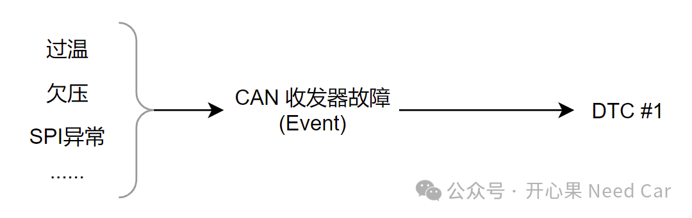
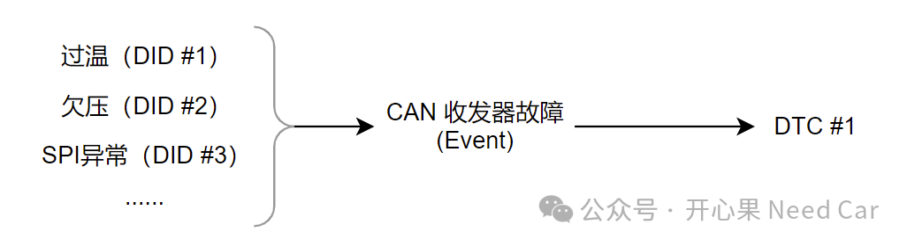
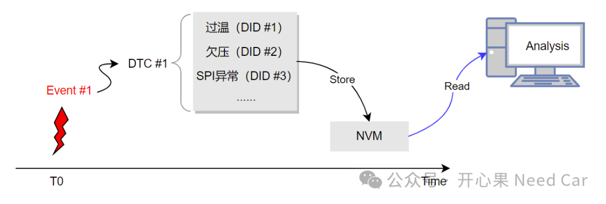
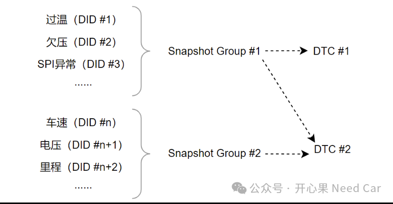
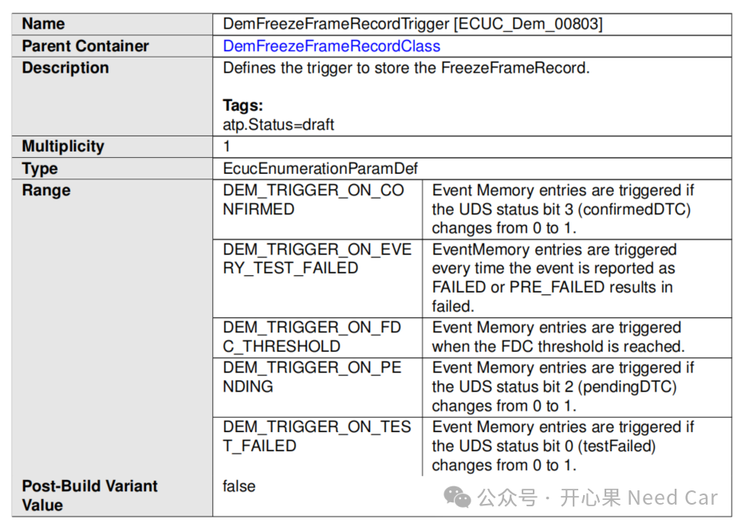
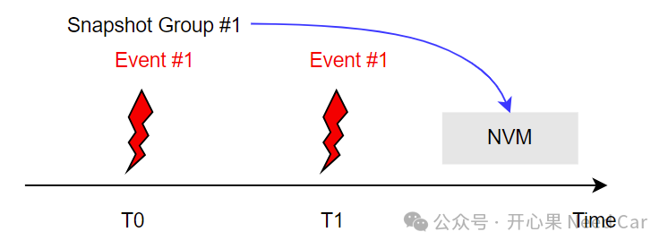
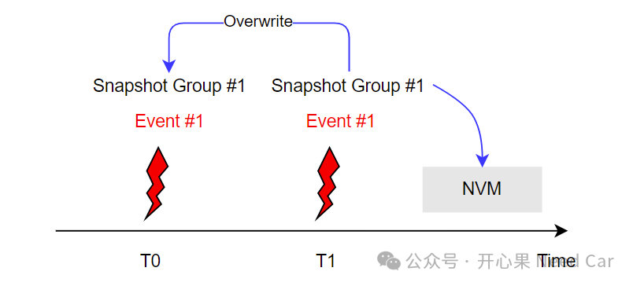
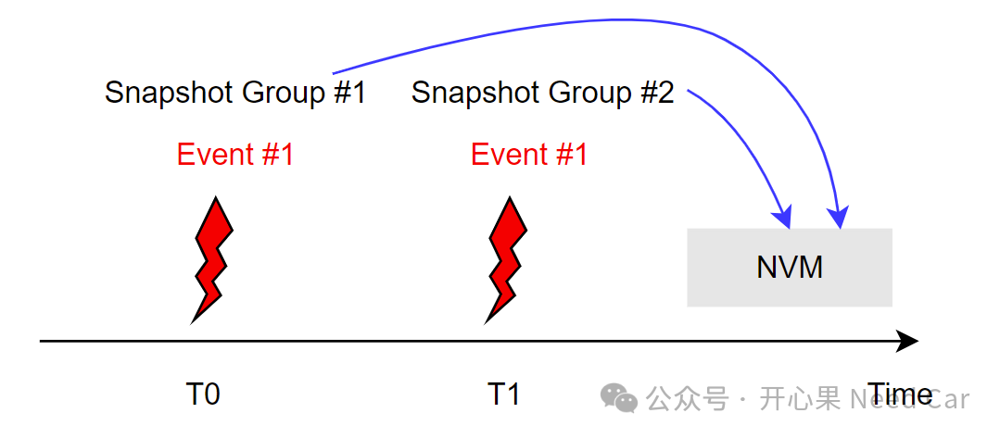

开心果 Need Car · 2024-03-14T06:48:00+08:00 · 微信原文
搞诊断开发的小伙伴对DTC（Diagnostic Trouble Code，诊断故障码）和快照数据（Snapshot Data）应该并不陌生。其中，快照数据也称为冻结帧（Freeze Frame）。为了精准地定位车辆故障，往往需要读取DTC对应的快照数据。所以，两者有着一定的联系，那么，故障事件（Event）发生，与DTC以及快照数据是怎样的一种联系呢？
1、Event、DTC、Snapshot Data关系
关于Event与DTC的关系，可以参考前文《DTC问题排查模板（一）：诊断需求明确》。这里主要解释一下Snapshot Data，Snapshot Data是一些列数据集合。
（一）为什么需要Snapshot Data？

（二）如何捕获故障信息
答：为了后续排查问题，需要将故障发生时，关联的数据（Data）存储下来。怎么做呢？在软件层面，可以把数据用一个个具体的变量表示出来。即：温度、电压等都可以定义成变量。为了便于区分和识别这些变量，为每个变量分配一个独有的DID（Data Identifier，数据标识符），示意如下：

当故障事件（Event #1）发生时，关联的DTC #1将相关的变量信息一并存储到NVM（Non-Volatile Memory，非易失存储区）。后续问题排查时，通过上位机将信息从NVM中读取出来，进行分析和问题定位，示意如下：

但是，如果DTC关联的数据变量多且不同DTC可以复用时，每个DTC都去关联这些变量，操作上比较冗余。所以，为了便于处理和维护，在工程上，常常将一系列变量（DID）分组，这些分组称之为快照组（Snapshot Group）。不同的DTC可以关联不用的快照组，也就关联了不同的变量。一个DTC可以关联一个或者多个快照组，甚至不关联快照组，示意如下：

2、快照数据的存储时机




参考资料
Specification of Diagnostic Event Manager AUTOSAR CP Release 4.4.0.pdf
往期精彩回顾